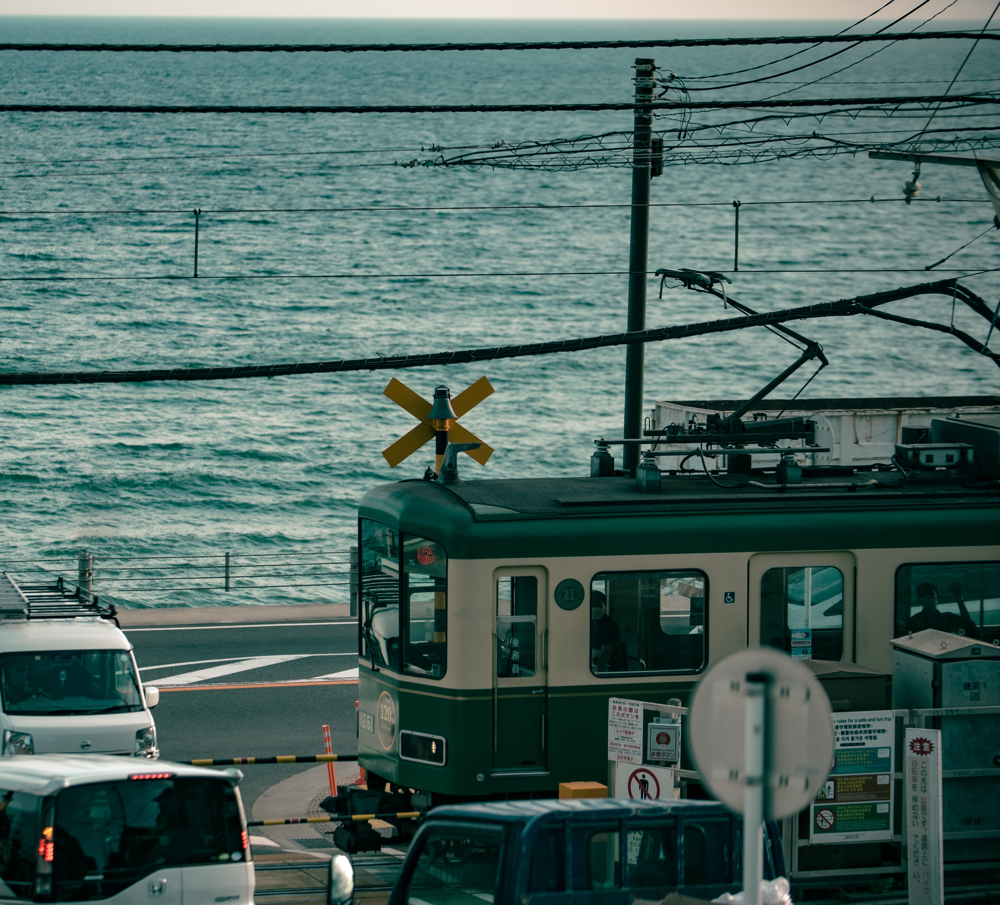
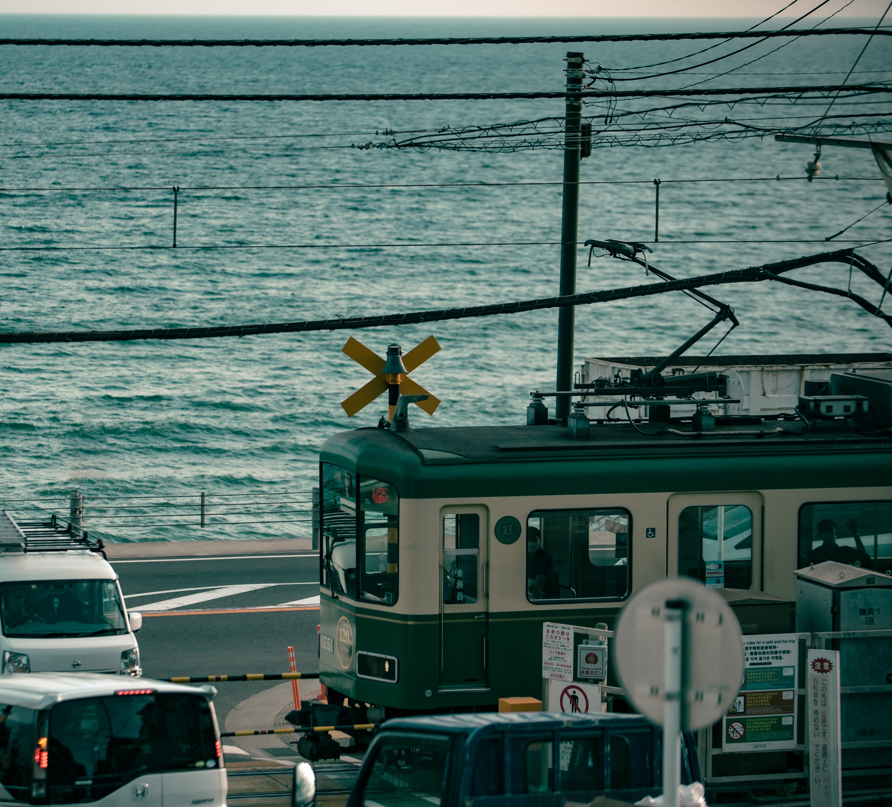

4.일정
day 1
나리타국제공항-숙소-아사쿠사-이치란 아사쿠사점-아사쿠사 실크푸딩-센소지-롯폰기-타마토야 히비야점-숙소
day 2
숙소-디즈니랜드-신주쿠-Ko Sushi-신바시-신지다이 이자카야-숙소
day 3
숙소-효탄야6초메-팀랩플래닛도쿄-도쿄역-오코노미야키 키지-숙소
day 4
숙소-워너 브라더스 스튜디오(해리포터)-하라주쿠역-이치란-오모테산도-시부야-규카츠-시부야스카이-숙소
day 5
숙소-코메다 커피-긴자구경-이마카츠-카페-나리타공항